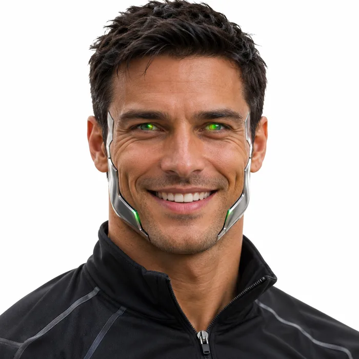
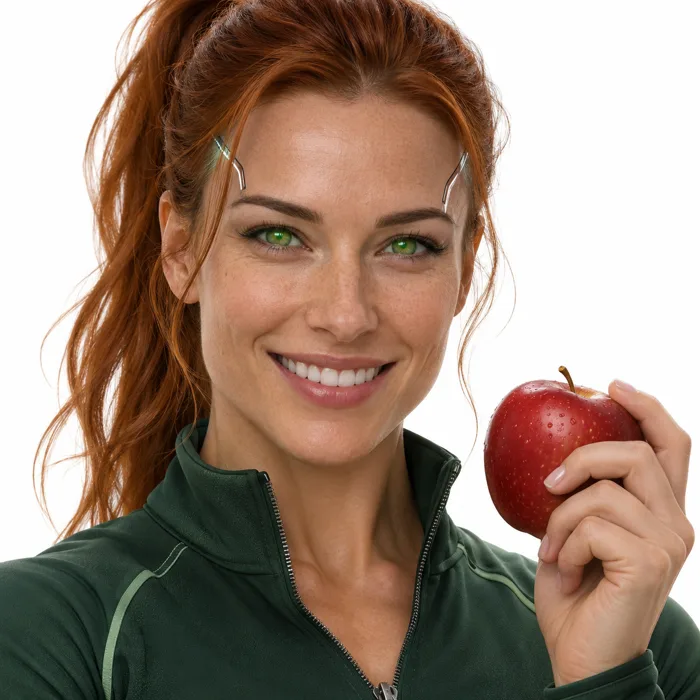
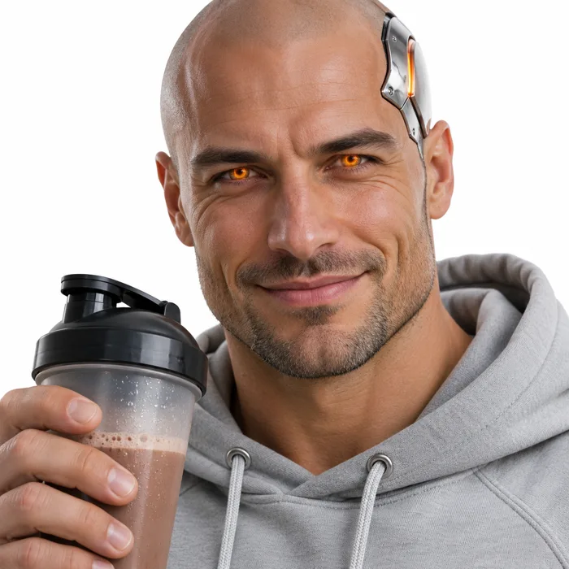
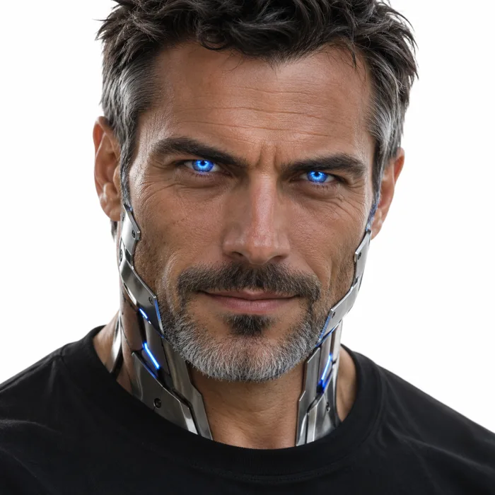
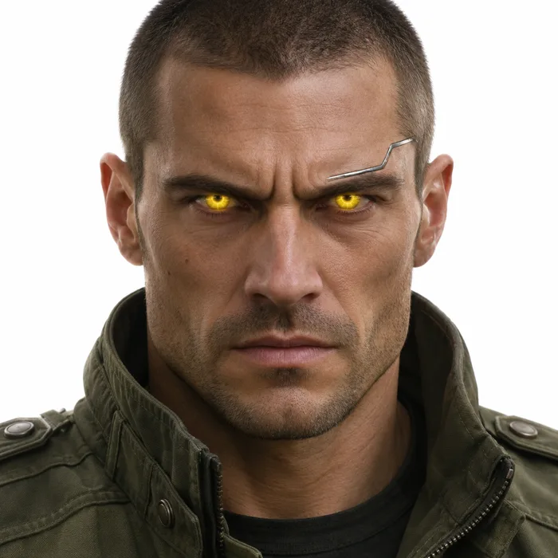
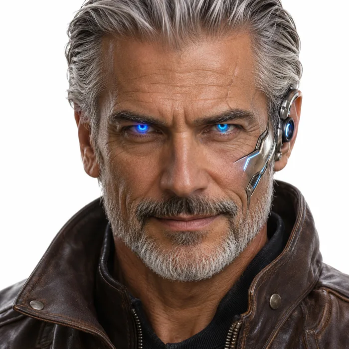

Стиль как у Евы: киборг, светятся глаза, белый фон, крупно лицо. Показано кругом, как в Telegram. Напиши три номера, например «t2 m1 n3» – поставлю всем трём ботам.
Тренер · @trener_artem_bot

t1 Мужчина, зелёные глаза, хром на челюсти, чёрная спортивная куртка

t2 Женщина, рыжий хвост, яблоко, зелёная куртка

t3 Лысый, оранжевые глаза, шейкер, серое худиt4 Женщина, короткие чёрные волосы, миска салата, белая куртка
Ментор Гром · @mentorbott_bot

m1 Седеющий, борода, глаза синие как молния, хром на шее, чёрная футболка

m2 Ёжик, жёлтые глаза, шов над бровью, военная куртка

m3 Седой, лет 50, синие глаза, хром у уха, кожанка